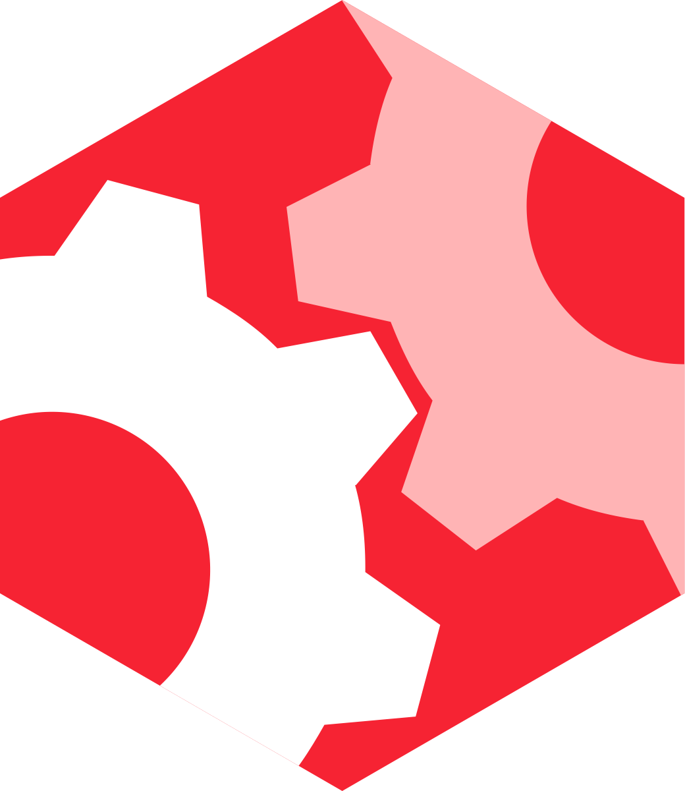

PureConfig



PureConfig is a Scala library for loading configuration files. It reads Typesafe Config configurations written in HOCON, Java .properties, or JSON to native Scala classes in a boilerplate-free way. Sealed traits, case classes, collections, optional values, and many other types are all supported out-of-the-box. Users also have many ways to add support for custom types or customize existing ones.
Watch the demo GIF below to see how PureConfig effortlessly translates your configuration files to well-typed objects without error-prone boilerplate.